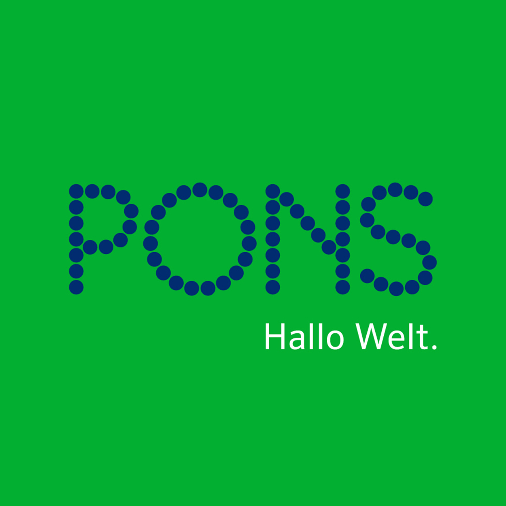
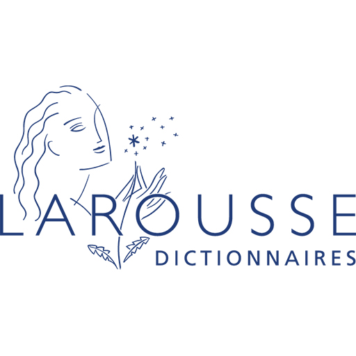

Strona dla wielojęzycznych
Strona Główna
Słownik
Książki
Gry
Utwory Muzyczne
EN: Cambridge Dictionary
Słownik Wielojęzykowy

ES: Diccionario de la lengua española
FR: LAROUSSE DICTIONNAIRE DE FRANÇAIS

DE: DUDEN Wörterbuch
RU: Грамота(będzie działać, jak Rosja przestanie odstawiać cyrki)